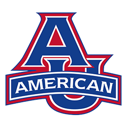

BVD Strategic Communication & Marketing Services
Data-driven and Human-centric Marketing Professional
Client List
Key Programs - Web Design and Maintenance
I have redesigned much of the Key Executive Leadership Programs' website after coming on board full time in late 2018. The goal of the redesign was to make the website more dynamic, visually compelling and increase user engagement. I have also been able to siginificantly reduce the number of pages on the site to decrease load time and ensure users find what they need right away.
UnForgotten History - Web Design & Research
As part of my capstone for the MA in Global Media, I created a website outlining some of the key points in indigenous American history. I conducted all research and lesson plans featured, and created the interactive site using Wix.
BA Broadcast Journalism
MA Global Media
American University School of Communication and International Service
About Me
If you’re looking for a professional Web Design Studio to help your company grow, you’ve come to the right place. Whatever the vision you have in mind, we’re committed to bringing it to life with superior quality, functionality and effectiveness.
From the initial strategy to the final outcome, our team provides guidance and support throughout the entire design process. We’ll work closely with you to understand what you want, what your style is and which elements are most important to you.
Using both data and design principles, our products are attractive, user-friendly and easy to maintain so you can take over with ease after our services are completed!
Schedule a consultation with us today.